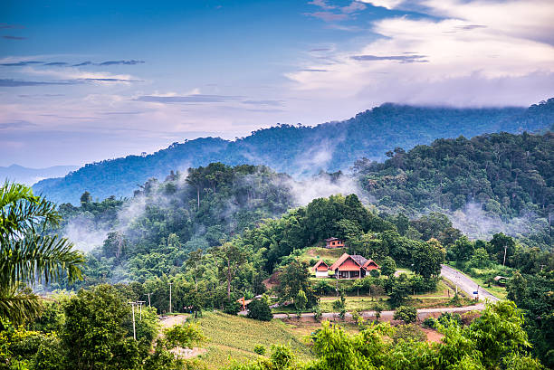

วัดพระบรมธาตุแช่แห้ง
พระบรมธาตุแช่แห้ง ตั้งอยู่ที่บ้านหนองเต่า กิ่งอำเภอภูเพียง จังหวัดน่าน พระธาตุคู่บ้านคู่เมืองและ ปูชนียสถานที่สำคัญของเมืองน่าน มีอายุกว่า 600 ปี

ดอยเสมอดาว
ดอยเสมอดาว ตั้งอยู่ใน อำเภอนาน้อย ในเขตอุทยานแห่งชาติศรีน่าน เป็นพื้นที่ที่เหมาะสำหรับการพักผ่อนชมพระอาทิตย์ขึ้นและพระอาทิตย์ตกในเวลาเดียวกัน

อุทยานแห่งชาติขุนสถาน
อำเภอนาน้อยยังมีอีกหนึ่งสถานที่ท่องเที่ยวที่งดงามบริสุทธิ์อีกหนึ่งแห่ง อุทยานแห่งชาติ ขุนสถาน